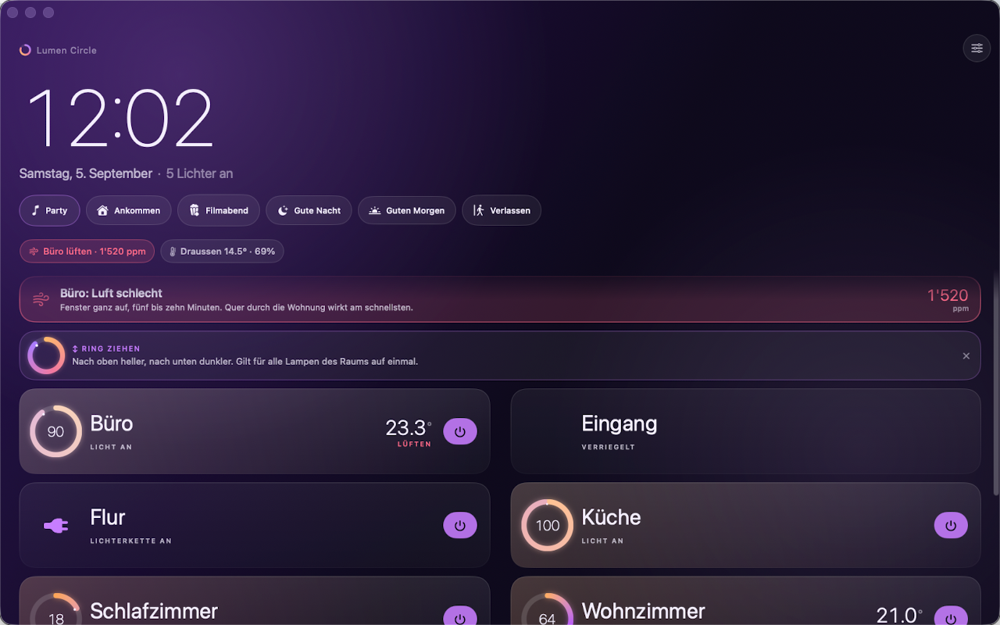

For Apple Home and Philips Hue
Your home at a glance.
An iPad on the wall that you can effortlessly read from two meters away. The iPhone as a remote control in your pocket, the Apple Watch as a precise dial on your wrist, and the Mac as a discreet window next to your work.
CHF 8 per year the first four days are completely free
Not yet in the App Store. Once the app is approved, you’ll find the link here.

Four Devices, One Home
Each device does exactly what it does best.

iPad
The Wall Panel
Runs 24/7. It shows you rooms instead of countless individual devices, plus temperature, air quality, and the current power consumption of your lights. After a minute without interaction, the panel transforms into a calm display: you see the time, date, and the status of your rooms. If you have an outdoor sensor, the temperature appears right below the time. If a power meter is running, you see the current load. Nothing burns into the screen, and nothing glares at night.

iPhone
The Remote Control
The same familiar view right in your hand. A quick tap opens the control ring, a swipe dims the light for the entire room. And if you leave while the lights are still on, a short notification reminds you.
Apple Watch
The Dial
The ring fills the entire display, the Digital Crown becomes the dimmer. Every step clicks noticeably – one percent per click. No tedious aiming with your thumb, no finger covering half the screen. A glance at the watch face is enough to see if a light is still on anywhere.

Mac
The Window
The same app as a handy window on your desk or in the kitchen. It communicates directly with HomeKit on your Mac – you don’t need an iPhone lying next to it.
Lighting Control
The Ring is the Slider.
How far the arc is closed instantly shows you how bright the room is. The ring glows in the exact color of your lamps. Except at night: then the surface stays monochrome so no disruptive blue light wakes you.
- A tap expands the ring.
- A smooth swipe controls all the lights in the room simultaneously. Every percent clicks into place.
- An expanded room shows you each lamp individually if needed.
Thirty lights in a list are a nightmare. Grouped as rooms, they become just six tidy lines. It simply says: “Lights on in the living room” instead of “Lamp 3 of 7 is at 72%.”

Power
Transparency Down to the Cent.
Philips Hue lamps do not measure their own power consumption. Lumen Circle handles that for you – using real measurement curves from one percent up to full brightness. A half-dimmed lamp often draws only a third of the power. For unknown lamps (like Hue smart plugs), the app calculates using realistic estimates and labels them transparently.
- Live View: The current power draw per room and for the entire home – directly on the panel and in the screensaver.
- Cost Overview: By day, week, month, or year. Calculated with your individual electricity rate, optionally including peak and off-peak rates.
- New Lamps: The app fetches the appropriate consumption profile entirely automatically.
- Smart Notifications (optional): A daily summary in the evening, a warning for unusually high load, or a fixed monthly budget in your currency. These alerts are disabled by default.
A single button press on the Hue Bridge is all it takes for the complete setup. The precise measurement data comes from the open-source Powercalc project.
Also
What Else the App Can Do.
- Air Quality at a Glance
- CO₂ levels often rise unnoticed over hours. You get tired long before the air actually smells stuffy. Lumen Circle categorizes the values — from very good to very bad — and gently reminds you to ventilate.
- Forgot the Lights?
- If you leave the house and lights are still on, you’ll receive a notification on your iPhone or Watch. Requires “Always” location access, disabled by default.
- Widgets and Complications
- Are any lights still on? You can see the answer right on your home screen or watch face without opening the app.
- Ten Color Worlds
- From light “Paper” to dark “Graphite”. At night, the panel automatically switches to a warm, eye-friendly profile.
- Accessible Readability
- The app adopts the text size from your system settings. After all, a panel in the hallway should be readable by everyone.
- Shortcuts as Tiles
- Robot vacuums, coffee machines – anything that doesn’t natively speak HomeKit but runs via the Shortcuts app gets its own tile. Includes a 5-step setup guide.
- Gentle Wake-up Light
- Starts at one percent in deep amber and slowly dims up to full daylight by your wake-up time.
- Party Mode
- The light dances to the beat. The audio level is measured purely locally on the device – absolutely nothing is recorded.
Setup
Ready in Three Steps – No Account Needed.
-
Allow Access to Your Home.
Rooms, names, and scenes are imported directly from the Apple Home app. Lumen Circle communicates locally with HomeKit. No login, no external service in between.
-
Press the Button on the Hue Bridge.
And just like that, your power consumption is tracked. The app finds the bridge in your home network automatically.
-
Permissions on Demand.
iOS only asks for local network, notifications, or location access when you use the feature for the first time. If you decline, you only miss out on that single feature.
Requires an active setup in the Apple Home app. Accessories without HomeKit support can be reached via a Shortcut.
Price
Fair Price.
CHF 8 per year. For the first four days, you can test Lumen Circle completely free of charge with all features included. After that, the annual subscription begins, which applies to all your devices using the same Apple ID and can be easily transferred to a new device via “Restore Purchases”. Cancel anytime directly in your Apple ID settings.
Privacy
Full Data Privacy.
Your Data Stays With You. There are no servers and we don’t track anything at all. The only things sent externally are the App Store purchase and your lamp’s model ID (e.g., “LCT015”) to the open Powercalc library to download the correct power profile. No name, no address, not even the number of your lamps is transmitted. Even the location for the departure notification stays saved locally on your device. The full version.